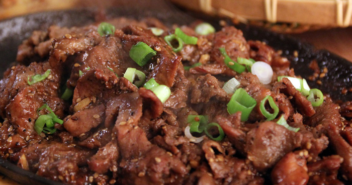
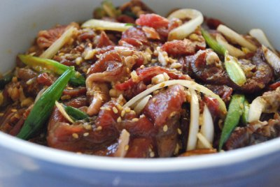
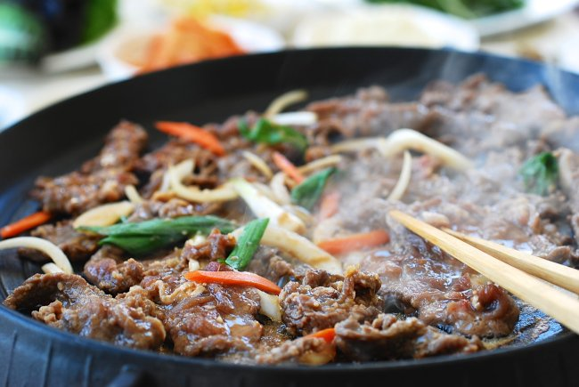

I love Korean food. It might have something to do with the fact that I am a Korean. I was born and raised in Daejeon, South Korea. Even though my mom was a good cook, I didn't know much about cooking when I got married. Not only did I have to learn how to cook, but I also had to learn to cook American food for my husband who was born and raised in Midwest. He was not a very adventurous eater. I was thrilled to see my husband in love with the first Korean dish that I had ever made for him. I have yet to meet a non-Korean who doesn't like Bulgogi.
Bulgogi is one of classic Korean dishes where thinly sliced meat is marinated in a sweet and savory sauce made of soy sauce, sugar, and sesame oil, and grilled on a barbecue or on a stove-top griddle. Literally meaning "fire" and "meat", this well-known Korean dish has been in existence for nearly over a thousand years.
Intensely flavorful, it is undoubtedly some of the tastiest dish to put on the grill. When the marinated meat hit the sizzling skillet , you can immediately smell the tantalizingly sweet & smoky aroma fills the hot summer air. It is no doubt one of the most well-known Korean dishes to non-Koreans. It&apo;s definitely my husband's favorite Korean dish.
